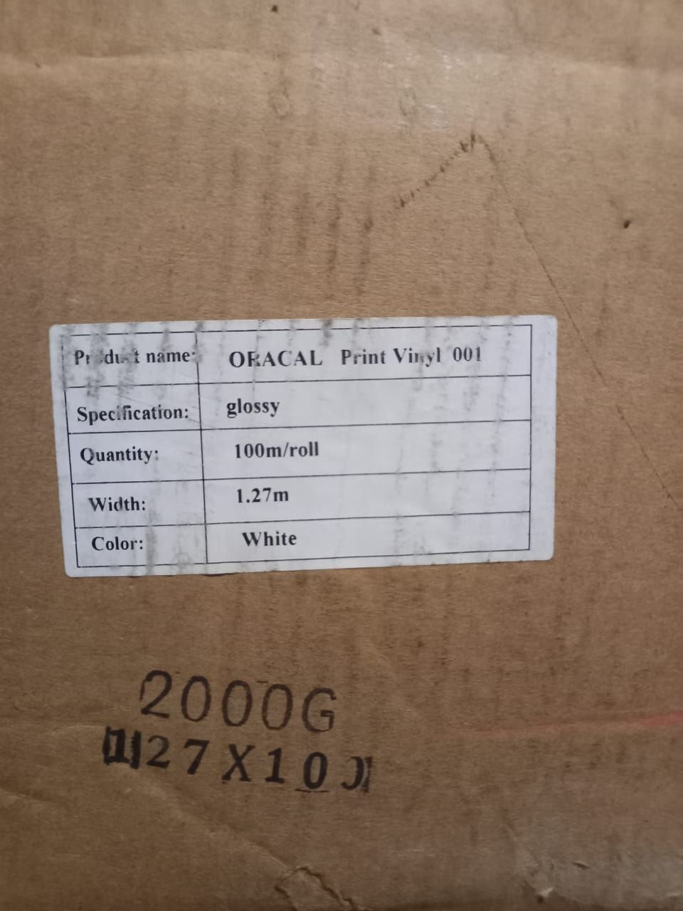
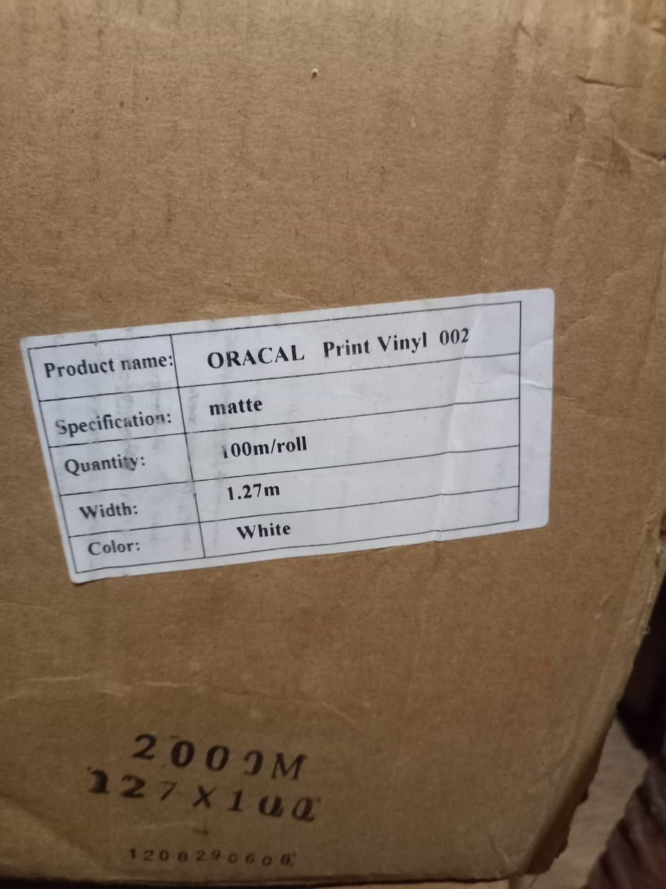

Характеристики
Універсальна самоклеюча плівка вініл — від реклами до авто та меблів
Шукаєте надійний та доступний матеріал для реалізації своїх ідей? Наша продукція — це високоякісний OEM аналог плівки Оракал 640 та Оракал 641, який повністю повторює технічні характеристики та зносостійкість відомого європейського бренду, але має значно вигіднішу ціну.
Завдяки міцній структурі, рівному клейовому шару та стійкості до зовнішніх факторів, ця самоклеюча плівка вініл має максимально широку сферу застосування в Україні:
Для реклами та друку: ідеально підходить для широкоформатного екосольвентного та УФ-друку, виготовлення наліпок, брендування вітрин та створення зовнішньої реклами в м. Київ та області.
Оздоблення меблевих фасадів: біла плівка в рулонах активно використовується у виробництві та реставрації меблів для швидкого оновлення чи захисту фасадів, столів та інших елементів інтер'єру.
Тюнінг та захист авто: підходить для обклеювання елементів салону, пластикових деталей, а також окремих частин кузова авто, створюючи захисний шар та стильний вигляд.
Ми пропонуємо перевірений оракал в рулонах зі складу в Обухові. Доступна швидка відправка замовлень за запитом оракал Україна (Нова Пошта, OLX Доставка) або самовивіз.
Фото товару


Чому у нас
Без посередників
Продаж напряму, безпосередньо "із рук в руки", нижча ціна на рулон та можливість домовитись про знижку при оптовому замовленні.
Товарна кількість в наявності
Зберігання на власному складі, без витрат часу на постачання, відправка в день замовлення.
Доставка по Україні
Відправляємо Новою Поштою, Meest, Укрпошта у будь-яке місто, упаковка виключає пошкодження рулону.
Готові замовити рулон?
Зателефонуйте або замовте безпечно через OLX Доставку.
Питання та відповіді
Яка мінімальна кількість для замовлення?
Продаємо від одного рулону. Для оптових партій діють знижки - уточнюйте за телефоном.
Чи можна забрати самовивозом?
Так, самовивіз можливий за попередньою домовленістю.
Яка різниця між матовою та глянцевою плівкою?
Глянцева дає більш насичений колір після друку, матова — менше відблисків при перегляді під кутом
Яка вартість рулону?
Найнижча можлива ціна - 50 грн./м2, за рулон загалом 6300 грн.
Де нас знайти
Склад та видача товару — м. Обухів, Київська область. Точну адресу для самовивозу уточнюйте за телефоном.